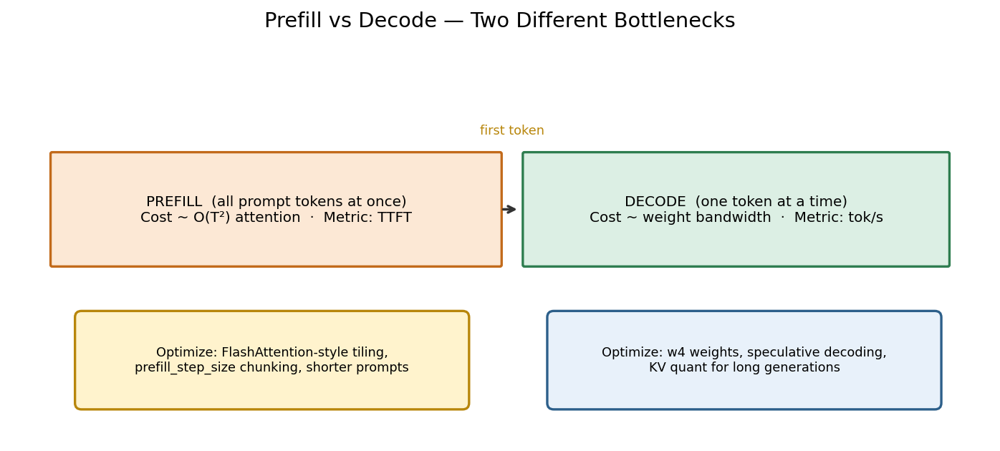
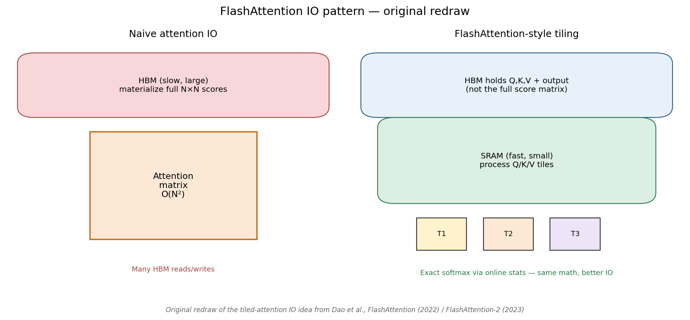
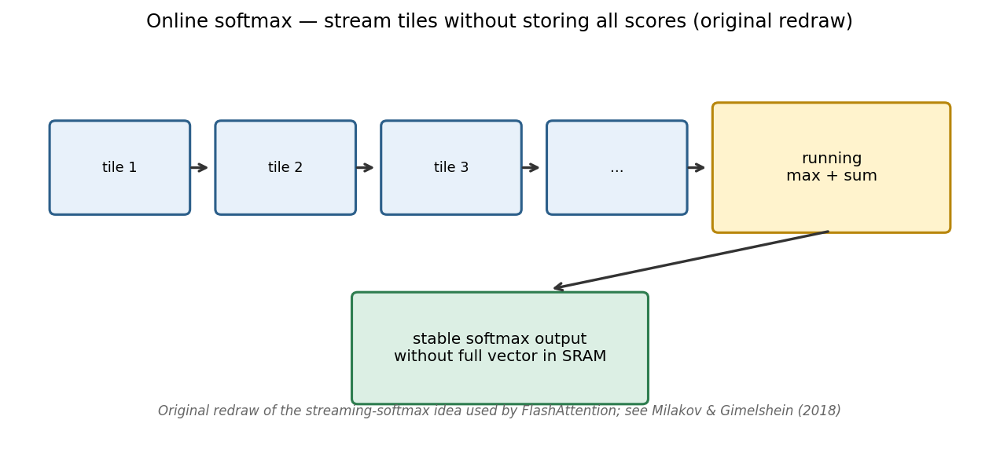
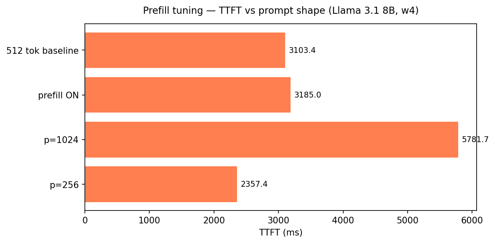
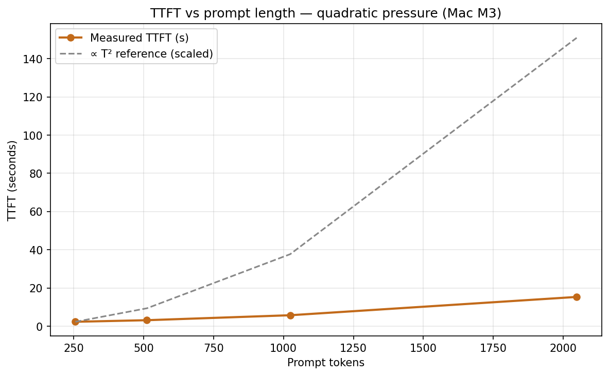

Local LLMs on Apple Silicon — Part 4 of 7
Why Your Chatbot Feels Slow Before the First Word
Prefill, FlashAttention intuition, and TTFT curves that go quadratic
UPLOAD THIS IMAGE IN MEDIUM
../images/thumbnails/thumb_03_prefill_ttft.pngUsers blame “slow AI” on streaming speed.
Often the real pain is earlier: time-to-first-token — the pause before the first character.
Prefill vs decode
UPLOAD THIS IMAGE IN MEDIUM
../images/workflows/03_prefill_vs_decode.png
- Prefill → TTFT (attention over the whole prompt)
- Decode → tok/s (weight bandwidth)
FlashAttention — exact, not approximate
UPLOAD THIS IMAGE IN MEDIUM
../images/papers/dao_flashattention_redraw.png
UPLOAD THIS IMAGE IN MEDIUM
../images/papers/milakov_online_softmax_redraw.png
Fun fact: FlashAttention computes the same math as naive attention. It just refuses to materialize the giant score matrix in slow memory.
The quadratic wall (real numbers)
Llama 3.1 8B, w4, Mac M3:
- p=256 → ~2.4 s TTFT
- p=512 → ~3.1 s
- p=1024 → ~5.8 s
- p=2048 → ~15.4 s
UPLOAD THIS IMAGE IN MEDIUM
../images/03_prefill_ttft.png
UPLOAD THIS IMAGE IN MEDIUM
../images/03_ttft_vs_prompt_curve.png
UPLOAD THIS IMAGE IN MEDIUM
../images/07_workload_ttft.png
What to do in product
- Chat → shorten system prompts, enable prefill chunking
- RAG → fewer chunks, prefix cache, don’t paste the whole PDF
- Long writing → optimize tok/s (w4) after TTFT is acceptable
./scripts/run_article.sh 3 "Mac M3"
← Part 3 · Next → Part 5: Model Size Ladder